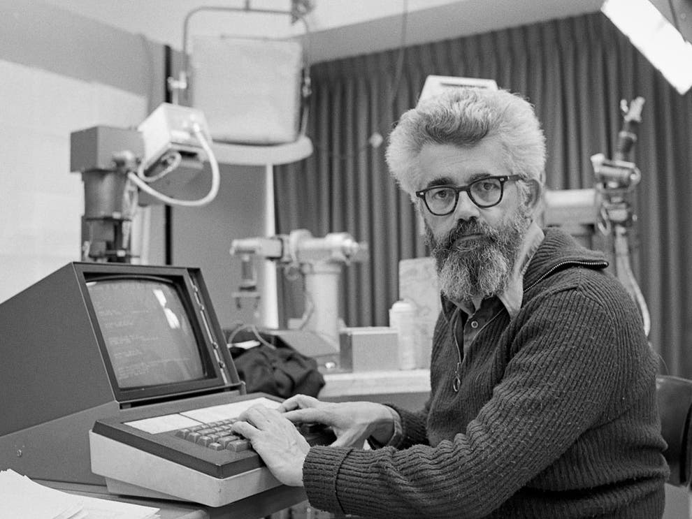

Основные достижения
Принятие советов
Отстаивал использование математической логики для искусственного интеллекта. В предложил систему «принятия советов», которая позже вдохновила работы по ответам на запросы и логическому программированию.
Для ввода данных использовались перфокарты, а программы писались на Lisp.

Язык Лисп
В том же он разработал язык программирования Лисп и опубликовал его описание в журнале Communications of the ACM в апреле .
Разделение времени
В публично предположил, что компьютерная технология разделения времени может привести к будущему, в котором вычислительные ресурсы и даже определённые приложения могут распространяться с использованием бизнес-модели сферы коммунальных услуг (подобно воде или электричеству).
Идея умерла в 1970-х Идея возродилась в 2000-х в виде облачных вычислений.
Список терминов
- Искусственный интеллект
- Наука и инженерия создания интеллектуальных машин.
- Lisp
- Функциональный язык программирования, созданный в .
- Time-sharing
- Режим совместного использования вычислительных ресурсов.
- Принятие советов
- Способность ИИ-системы учитывать рекомендации и изменять своё поведение.
Хронология ключевых событий
| Год | Событие | Место | Значение |
|---|---|---|---|
| 1955 | Ввёл термин «искусственный интеллект» | Dartmouth | Рождение новой науки |
| 1958 | Разработал язык Lisp | MIT | Основа функционального программирования |
| 1961 | Идея разделения времени | MIT | Предтеча облачных вычислений |
| 1962 | Стал профессором Стэнфорда | Stanford | Начало нового этапа |
| 1971 | Получил премию Тьюринга | ACM | Высшая награда в информатике |